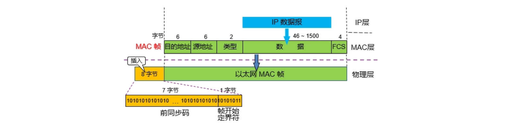
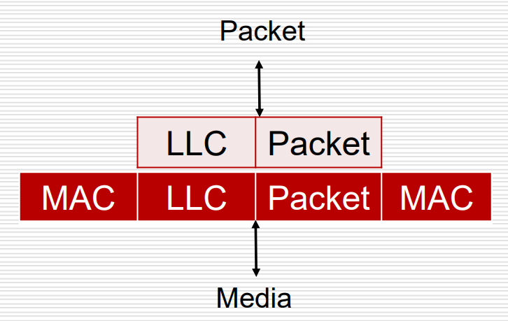
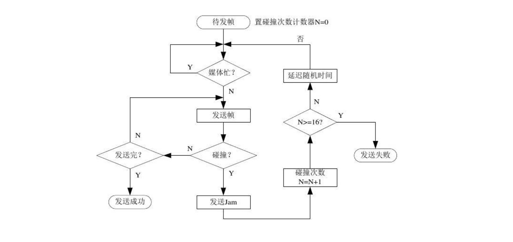
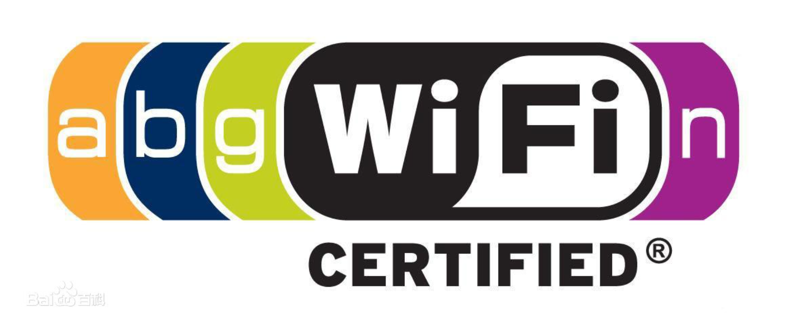
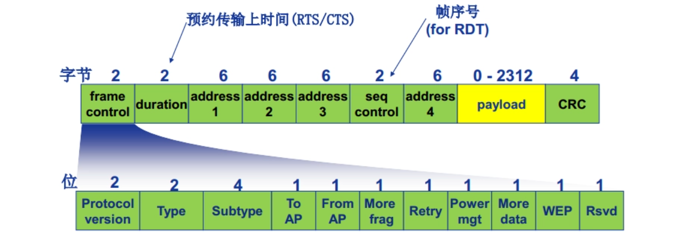
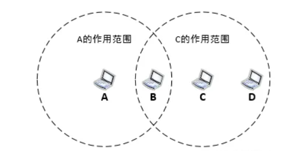
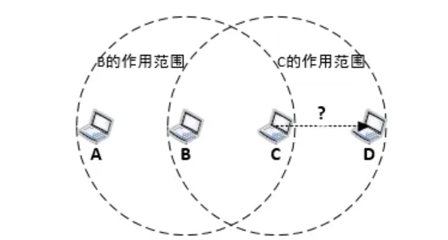
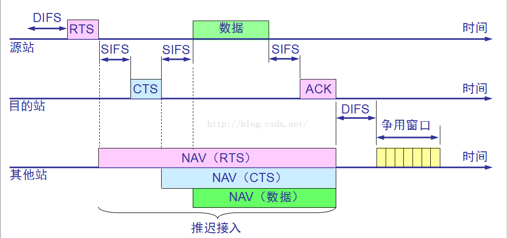
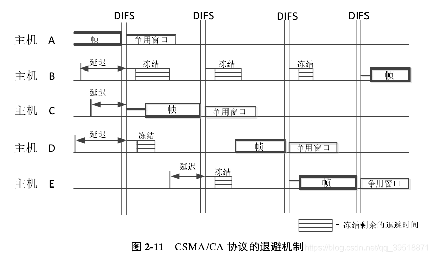

OSI参考模型第二层 数据链路层原理与技术

概述
数据链路层的任务和工作
数据链路层与第一层物理层的关系相对紧密，数据链路层主要解决的问题是：如何在链路稳定性不确定的情况下完成正确的数据传输；数据链路层的主要任务是逻辑连接控制（网络拓扑控制，Logical Link Control, LLC）和介质访问控制（Media Access Control, MAC），其中包含的工作有身份标识（Addressing/Naming Process），错误识别（Error Notification），流控制（Flow Control），数据成帧与解封装
为上层提供的接口和服务
面向连接指的是需要通信双方同意后才能开始通信
需要确认/需要应答指的是收到消息后需要向发送方发送确认消息
- 无连接无应答服务，常应用于可靠链路上的连接、实时任务（需要在规定时间内给出结果的任务）和大多数局域网
- 无连接有应答服务，常应用于不太可靠的链路，特点是如果接收方未进行确认则发送方需要重传数据
- 面向连接有应答服务，一般应用于陌生主机之间的通信，并且一般没有面向连接但无应答的服务
常见的局域网介质访问控制
局域网技术
以太网(Ethernet)，采用总线拓扑
令牌环网(Token Ring)，采用单环/多环拓扑
光纤分布式数据接口(FDDI)，采用单环/多环拓扑
广播控制方式
确定控制方式(Deterministic)，局域网内用户轮流访问，访问权限令牌按确定顺序传递，并在每个用户停留约定时间，使用协议Deterministic MAC Protocols，例如令牌环网和FDDI
非确定的控制方式(Non-deterministic)，先发送数据包的用户占有链路介质，使用协议Non-Deterministic MAC Protocols，也称为$\color{red}Carrier~Sense~Multiple~Access~with~Collision~Detection(CSMA/CD)$，需要在发送数据的同时侦听介质访问是否有冲突发生
局域网传输方式
单播(unicast)，依赖于MAC地址标识实现的单目的地通信
组播(multicast)，目的地是网络中一群有特殊性质的节点的通信
广播(broadcast)，目的地是网络中所有节点的通信
以太网和CSMA/CD
LLC和MAC子层

数据链路层的工作可以被分为两部分，这两部分就是LLC和MAC子层，其中MAC子层(Media Access Control Sublayer)负责控制物理层介质并完成两层之间的数据传输，即介质访问控制与介质配套；LLC子层(Logical Link Control Sublayer)负责向上层网络层传输数据并完成交互
MAC子层的帧
MAC子层的帧由IEEE 802.3规定（Ethernet II也规定了MAC子层帧格式，但基本一致），所以也称为802.3帧

前导码(preamble)，总共8字节长，前7个字节为10101010，最后1个字节为10101011，作用是发送反复震荡的信号提醒网卡进入活跃状态，最后的两个1信号表示即将开始发送数据
源(source)与目的(destination)地址，长度均为6个字节，源一定是单播地址（由一台唯一确定主机发送），目的地址则可以是单播/组播/广播地址，其中6个自己全1表示广播地址
数据长度(length)，长度为2个字节，取值范围是46~1500，单位是Byte，用于表示后续IP数据报的长度，最小长度为46B的原因是IEEE802.3标准规定MAC子层的帧长度最小为64B，以便使链路介质能被数据帧完全填满，利于以太网卡精确地检测冲突的发生，在Ethernet II标准中此处的命名为type，但取值范围一致
数据(data)，长度可变，但最少为46字节，最多为1500字节，如果不够长则添0，超长则分批发送
校验码(FCS)，长度为4个字节，使用循环冗余校验(cyclic redundancy check)通过约定好的算法根据除去前导码之外的部分计算出的结果，用于接收方检查数据在传输过程中是否出现了错误
LLC子层的封装

LLC子层在与网络层交互收到需要传输的数据(packet)后，会向其中加入一些控制信息来帮助数据完成传输，其中包含The Destination Service Access Point(DSAP)和The Source Service Access Point(SSAP)
MAC子层中的介质访问控制
MAC地址
MAC地址是48位二进制数字组成的数串，可以被压缩为12位十六进制数
其中前24位是由IEEE统一分配的$Organizational~Unique~Identifier(OUI)$，区分不同的生产厂商，其中第0位的0表示单播地址，1表示组播/广播地址；第1位的0表示全局地址，1表示本地地址，因此最多有$2^{22}$个OUI
剩余的24位由网卡生产商分配管理，构成网卡芯片标识，区分同一厂商内的不同设备
常见的格式有xxxx.xxxx.xxxx和xx-xx-xx-xx-xx-xx
Ethernet802.3广播
将目的地址设置为全1即可发送广播，但由于广播会占用大量的链路资源，所以应尽可能减少广播的使用，广播一般只在两种情况下使用：向所有主机声明自己的地址、向所有主机询问某主机的地址
CSMA/CD发展与操作
纯阿罗哈(pure ALOHA)，主机随时可以发送数据，如果数据的传输出现问题就整体回退一段时间
时隙阿罗哈(slotted ALOHA)，将信道分时片，只能在每个时片的开始处开始传输，如果出现问题则在下一个时片再次发送
带有冲突检测的载波侦听多路访问(CSMA/CD)，持续侦听信道，只有在信道空闲时才发送数据，发送过程也持续侦听，如果发生冲突则广播阻塞(jam)信号，广播完成后整体回退一段时间

CSMA/CD中又有三类策略：
1-persistent：如果有数据要发送，则保持持续侦听，直到信道空闲并将数据发出
non-persistent：如果有数据要发送但线路繁忙，则随机等待一段时间再进行侦听
p-persistent：寻找信道的时隙，如果时隙满足要求则发送
无线局域网和CSMA/CA
无线局域网及其标准
无线局域网的带宽目前只能达到有限的一半，只能在相邻节点之间进行短距离通信，也称为Wi-Fi（高保真无线网络）

IEEE 802.11
采用直接序列拓频(Direct Sequence Spread Spectrum, DSSS)
实际通量在1~2M之间，带宽为11M
IEEE 802.11b
在2.4GHz频段工作，通量达到11M
IEEE 802.11a
使用正交频分复用，在5GHz频段工作，带宽达到54M，一般普适标准在20~26M之间
IEEE 802.11g
使用正交频分复用(Orthogonal Frequency Division Multiplexing, OFDM)，传输速率与IEEE 802.11a一致，但穿透性和传输距离更优秀
IEEE 802.11n
带宽达到108M，理论传输速度甚至可以达到500~600M（实际很难达到）
无线局域网拓扑
基础设施模式(Infrastructure Mode)
使用星型拓扑，中心节点一般为提前设立的基站(Base Station, BS)，在拓扑中称为接入点(Access Point, AP)，该基站能提供服务的节点范围称为基本服务集(Basic Service Set)，基站通过分布式系统(Distribution System, DS)与其他基站相连后，能跨域提供服务，所有能够连接到这个基站的节点范围称为扩展服务集(Extension Service Set)
当一个接入点(AP)安装完毕后，服务集编号(Service Set Identifier, SSID)和一个服务频道也随之确定，例如NJU-WLAN
接入过程(Accessing Procedure)
客户端需要先与AP绑定后才能开始收发数据帧，这一过程也称为扫描(scanning)
主动扫描(Active Scanning)
主机向信道中发送probe request帧，该帧可以单独发给某个AP或在信道内广播，发送完成后就在当前信道等待，如果收到AP的反馈就进行记录
被动扫描(Passive Scanning)
主机搜索信道中AP发出的beacon帧，通过接收到的beacon帧来罗列AP的信息
主机逐个相连(Ad-hoc Mode)
WLAN帧
WLAN帧的格式不同于802.3帧，其分类有三种，分别是控制帧(Control Frames)，管理帧(Management Frames)，数据帧(Data Frames)，其中只有数据帧与802.3帧的格式相似
由于基站之间的分布式系统也是通过以太网进行连接，所以虽然WLAN帧的大小上限理论上更大（约2346字节），但实际上没有意义
WLAN帧也称为802.11帧

帧控制(Frame Control)
协议版本(Protocol Version)
其中最多只有4个可选协议版本
类型(Type)
标识帧的类型，即控制/管理/数据帧
子类型(subtype)
控制帧有16种子类型，管理帧更少
分片(more frag)
由于WLAN帧的大小上限大于以太网802.3帧，所以需要分片处理
重试(retry)
因出错重新发送帧
持续期(duration)
标识预期占用传输介质的时间
序号控制(seq control)
如果每发送一个帧都需要等待接收方确认是否需要重发，接收后再发送下一个帧的效率太低，因此发送方一次性会将所有需要发送的帧全部发送，并给它们编号，这样接收方就可以回复哪一个序号的帧出现了传输错误
帧主体(payload)
即帧的数据，长度为0~2312字节，其前面的部分合称MAC首部，其后面的部分为循环冗余校验码，共4字节，称为MAC尾部
地址字段(address)
802.11帧中一共有4个地址字段，地址1~4分别表示对于当前帧来说的目的地址，源地址，暂存地址，自组网络保留地址（一般不使用）
其中需要暂存地址的原因是WLAN帧需要经过AP的转发，转发之前和转发之后真正的目的地址和源地址需要记录下来，因此不同情况下的源/目的地址情况罗列如下：
| 转发情况 | 去往AP | 来自AP | 地址1（目的地址） | 地址2（源地址） | 地址3（暂存地址） |
|---|---|---|---|---|---|
| 转发前 | 1 | 0 | AP地址 | 源地址 | 目的地址 |
| 转发后 | 0 | 1 | 目的地址 | AP地址 | 源地址 |
CSMA/CA
全称为$\color{red}Carrier~Sense~Multiple~Access~with~Collision~Avoid$，带有冲突避免的载波侦听多路访问
Hidden Station Problem
隐蔽站问题，由于A与C之间互相不可见，当它们同时向B发送信号时就会发生碰撞冲突

Exposed Station Problem
暴露站问题，当B向A发送信号时C同时也会侦听到信号，C认为信道繁忙，就无法向D发送信号

原理机制
发送数据的节点在发送数据之前，会先发送短控制帧(Request To Send, RTS)告知接收站点和周围站点，收到该帧的周围站点在一定时间内就不再向该站点发送数据以免出现冲突
收到RTS帧的接收站点发送短控制帧(Clear To Send, CTS)告知发送站点和周围站点，收到该帧的周围站点在一定时间内就不再向接收站点发送数据以免出现冲突。收到CTS帧的发送站点再开始发送数据
如果RTS和CTS出现冲突，就采用二进制指数后退算法等待随机时间后重新开始发送过程

其中DIFS表示Distributed Inter-frame Spacing，即分布式帧间间隙，用于规避各站点性能不同的问题，设置一段时间空闲以等待所有站点准备就绪
SIFS表示Short Inter-frame Spacing，相对DIFS来说更短
其他站点的推迟接入期可以通过RTS，CTS和数据帧的持续期进行预估推算因而比较准确
当源节点发送数据完毕后，需要目的节点应答ACK帧进行确认，可能导致有效带宽降低50%，网络的整体表现也会受到随信号强度调整机制(Adaptive Rate Selection, ARS)的影响，表现为距离接入点物理距离越近，传输速度越快

争用窗口指的是当一个帧的发送已经完成后，需要发送数据且未处于退避（延迟）状态的主机就可以开始发送数据的进程，而在争用窗口期仍然处于退避状态的时间称为冻结时间，冻结时间越短的主机获得使用信道的权利
在退避机制的算法中，一个主机的失败尝试越多（退避次数越多），每次退避的时间越短
第二层设备
网卡(NIC)
提供数据链路层的逻辑链路控制和介质访问控制接口功能
网桥(Bridge)
基于软件进行转发，时延提升10%~30%，功能是基于mac地址分段隔离(break up)冲突域，只有两个端口，因此只能将一个冲突域划分为两个，转发跨冲突域的数据包，但是不能隔离广播域
透明网桥(transparent bridge)会将工作过程中学习到的mac地址携带其生存期存入RAM缓存(速度较快但数据断电丢失)，如果当前需要转发的帧的目的mac地址尚未学习到，就在广播域内广播询问其mac地址(泛洪)，但过多的广播会影响网络的整体性能
交换机(Switch)
基于硬件进行转发，性能优于网桥，且端口数量远多于网桥，因此可以隔离出多个冲突域，依然不能隔离广播域，交换机的转发核心背部总线的带宽为每个端口带宽的8~10倍，以提供充足的转发性能